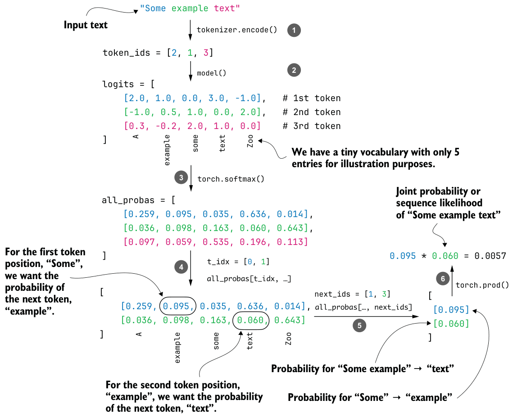

Joint probability of a token sequence
Ideally, the probability assigned to the sequence "The capital of Germany is Berlin" should be much higher than that of the nonsensical answer "The capital of Germany is Bridge". Because the joint probability is obtained by multiplying many small values, the resulting probabilities for both sequences in figure 5.11 are close to zero. We address this issue in the next section.
The two answers in this example are nearly identical, differing only in the final token ("Berlin" versus "Bridge"). The same method can also be applied to sequences that differ more substantially, such as the answers generated in section 5.2 for the MATH-500
prompt (“Half the value of $3x-9$ is $x+37$. What is the value of $x$?").How this probability scoring differs from greedy sampling and temperature-plus-top-p sampling
generate_text_stream_cache function (greedy sampling) and the generate_text_top_p_stream_cache function that we coded in chapter 4 behave very differently. Greedy sampling always selects the most likely next token, while temperature sampling and top-p sampling draw from a reshaped probability distribution. These procedures modify the distribution at each step and then commit to a single token, which becomes the input for the next position. None of these sampling strategies, including greedy sampling, is guaranteed to produce the sequence with the highest overall probability under the model. A token that looks suboptimal at one step can lead to a future step where the following tokens are much more likely. On the other hand, a locally optimal choice may steer the model toward low-probability sequences later. Even if we did find the globally highest-probability sequence under the model, that still would not guarantee that it is the correct answer or the most useful answer for the user. It would only mean that it is the sequence the model prefers most under its learned distribution. Temperature and top-p sampling add even more variability by flattening or truncating the distribution before drawing samples, which may further disconnect the generated text from the globally most likely sequence. By scoring an existing answer, we avoid all these complications. We do not run a sampling algorithm, and the model does not choose any tokens. We only evaluate how probable the given sequence would have been, if it had already been written.We’ve looked at the conceptual explanations, so now let’s see the token probability calculation in action.
@torch.inference_mode()
def calc_next_token_probas(model, tokenizer, prompt, device, show=True):
token_ids = torch.tensor(tokenizer.encode(prompt), device=device) logits = model(token_ids.unsqueeze(0)).squeeze(0)
all_probas = torch.softmax(logits, dim=-1)
t_idx = torch.arange(0, token_ids.shape[0] - 1, device=device)
next_ids = token_ids[1:]
next_token_probas = all_probas[t_idx, next_ids]
prod_next_token_probas = torch.prod(next_token_probas)
if show:
print("Next-token probabilities:", next_token_probas)
print("Joint probability:", prod_next_token_probas)
else:
return next_token_probas, prod_next_token_probasAs you can see, the calc_next_token_probas function, which computes the next-token probabilities (illustrated in figure 5.11), is relatively short and appears simple at first glance. But a lot is happening in this function to carry out the computation. Figure 5.12 illustrates this with a simpler input text example and a tiny five-word vocabulary.
The calc_next_token_probas function, illustrated in figure 5.12, computes next-token probabilities in a few steps. First, it computes the logits in the same way as the text-generation functions introduced earlier (for example, the out = model(token_ids) line in generate_text_basic from section 2.7).
The resulting logits (step 2 in figure 5.12) have shape [sequence_length, vocab_ size] and are then converted into normalized probability distributions using torch.softmax (step 3), so that the probabilities at each position sum to 1.
To extract the probability assigned to the actual next token at each position, we construct an index tensor t_idx for the positions we want to score and another tensor, next_ids, containing the corresponding target tokens. For example, if the input text is"The capital of Germany is Berlin", then t_idx refers to the positions corresponding to"The capital of Germany is", and next_ids contains the tokens shifted by one position:
"capital of Germany is Berlin".These target tokens are simply the input tokens shifted by one position because an LLM is trained to predict the next token in a sequence. For example, given the input"The capital of Germany is Berlin", the model is asked at position 2 (the token for"capital") to predict position 3 (the token for "of"). Using all_probas[t_idx, next_ ids] (steps 4 and 5) retrieves exactly these probability values for each position in the sequence.
Finally, the function uses torch.prod to compute the sequence likelihood as the product of the per-token probabilities (step 6).

Let’s see this function in action:
torch.set_printoptions(precision=4, sci_mode=True)
calc_next_token_probas(
model, tokenizer, device=device,
prompt="The capital of Germany is Berlin"
)This is the resulting output:
Next-token probabilities: tensor([6.1512e-05, 4.6484e-01,
1.6724e-02, 7.3828e-01, 1.6895e-01], dtype=torch.bfloat16)
Joint probability: tensor(5.9372e-08, dtype=torch.bfloat16)Let’s try another text:
calc_next_token_probas(
model, tokenizer, device=device,
prompt="The capital of Germany is Bridge"
)This results in the following output:
Next-token probabilities: tensor([6.1512e-05, 4.6484e-01, 1.6724e-02,
7.3828e-01, 2.9802e-07], dtype=torch.bfloat16)
Joint probability: tensor(1.0481e-13, dtype=torch.bfloat16)Analyzing these results, the first response (ending in "Berlin") had a joint probability (sequence likelihood) of 5.9372e-08, which is larger than the joint probability of the second response, 1.0481e-13. (In decimal form, 5.9372e-08 is 0.000000059372 and
1.0481e-13 is 0.00000000000010481.)These results make sense because the "Berlin" answer receives a higher sequence likelihood than the "Bridge" answer. Both values are extremely small because multiplying many probabilities less than one quickly produces numbers that approach zero. This makes raw likelihoods difficult to work with in practice, especially for longer sequences where underflow becomes a problem.
In the next section, we’ll modify this calculation with log probabilities, which will let us avoid these numerical issues and give us a more stable way to score entire sequences.